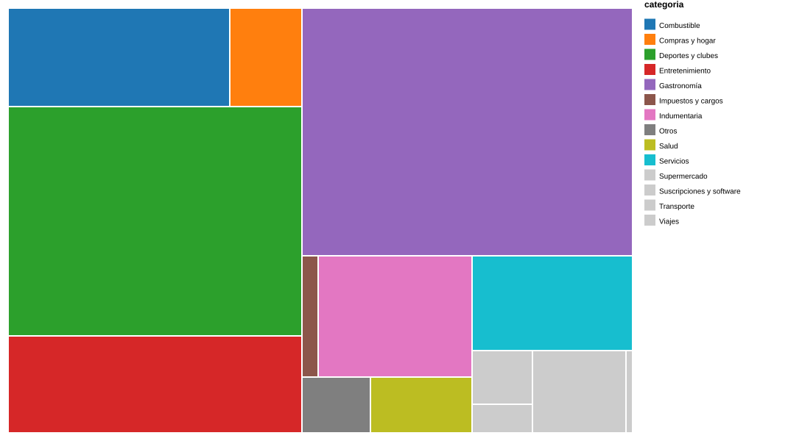

De los resúmenes a las visualizaciones
El análisis parte de movimientos extraídos de resúmenes de tarjetas de crédito. Se organizaron los registros, se revisaron manualmente las categorías de los comercios y se construyeron visualizaciones para responder dos preguntas: ¿en qué rubros se concentra el gasto? y ¿cómo varían los consumos de cada tarjeta a lo largo de los meses?
¿En qué categorías se concentra el gasto?
El área de cada rectángulo representa el importe total de consumos en pesos argentinos de una categoría. Cuanto más grande es el rectángulo, mayor es su peso relativo en el total analizado.

Lectura del gráfico
Gastronomía y Deportes y clubes ocupan las superficies más grandes del Treemap. Esto permite identificar visualmente los rubros con mayor participación en los importes analizados, sin confundir el monto gastado con la cantidad de transacciones.
¿Cómo evolucionaron los gastos de Visa y Mastercard?
Las dos series comparan los importes mensuales en pesos argentinos. Cada punto representa un mes con datos, agrupados según la fecha de consumo registrada, no necesariamente el mes de facturación de una cuota.
Gráfico interactivo publicado en Flourish. Los meses sin registros de una tarjeta se representaron como cero en el CSV de visualización; esto no prueba ausencia real de gastos.
¿Qué nos muestran los datos?
- Concentración: Gastronomía y Deportes y clubes destacan por su participación en el gasto en ARS.
- Variación temporal: la serie de Visa muestra un pico marcado hacia diciembre de 2025; Mastercard registra un pico destacado en noviembre de 2025.
- Comparación: las dos tarjetas presentan patrones diferentes de consumo, que se pueden explorar mes a mes en la visualización interactiva.
Cómo interpretar los resultados
Este análisis es descriptivo. Las fechas abarcan los registros disponibles, no necesariamente un año calendario completo. Las compras en cuotas pueden aparecer asociadas a su fecha de consumo, y la ausencia de registros en un mes no garantiza gasto cero. Los montos en dólares no se suman a los importes en ARS, para evitar mezclar monedas sin un tipo de cambio definido.